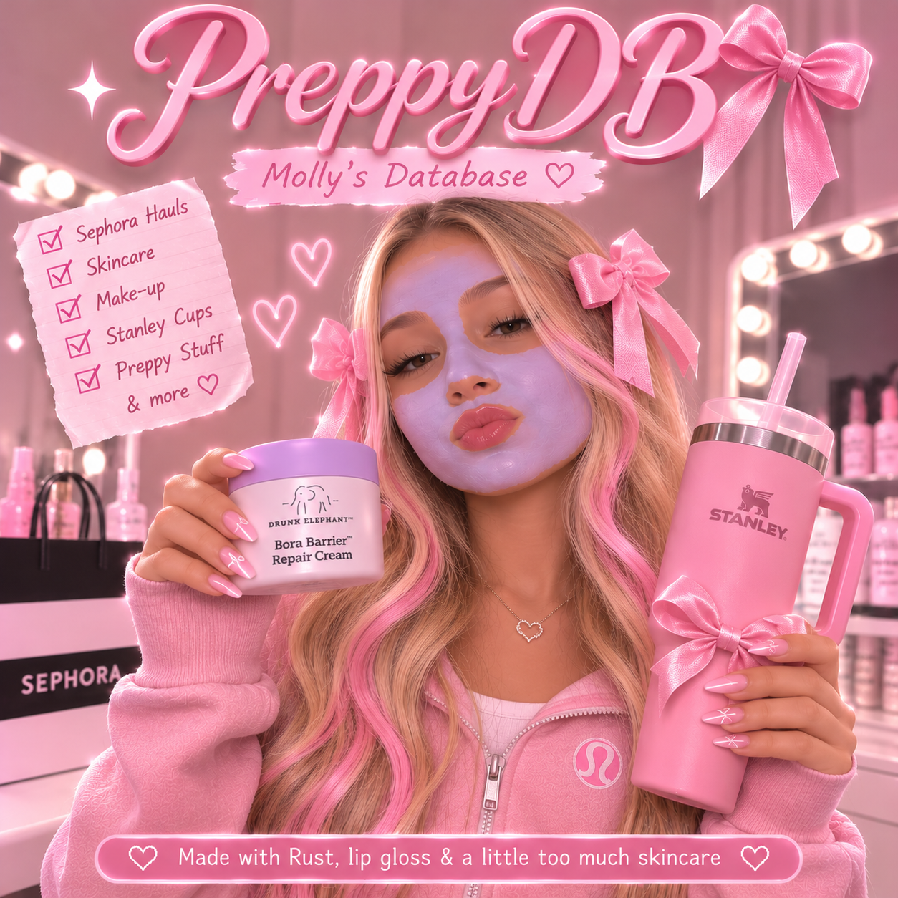

Keep it durable
Write-ahead logging, CRC32C-protected frames, checkpoints and recovery are documented for the 0.1.0 branch.
Storage notes →✦ EMBEDDED-FIRST DOCUMENT DATABASE
Your data deserves a little gloss.
A pre-release, embedded-first document database with a Rust client, Lua/Luvit client, versioned HTTP API and a serious storage engine underneath the sparkle.
0.1.0 pre-release · Source features are documented on the open PR #1 ↗; no release artifacts are claimed.

THE TECHNICAL EDIT
PreppyDB’s pre-release branch documents JSON-like collections, atomic batches, read-committed transactions, snapshots, indexes, TTL sweeps and backup/restore. Every claim on this site links back to its source documentation.
Write-ahead logging, CRC32C-protected frames, checkpoints and recovery are documented for the 0.1.0 branch.
Storage notes →Use the Rust client, Lua/Luvit client, admin CLI or the versioned HTTP API—each with explicit boundaries.
Client guides →Collections hold JSON-like documents; documented schemas, indexes and a local-only playground keep the first step delightful.
Open playground →A TINY FIRST LOOK
Run the real server locally, keep credentials out of your shell history, and start with a collection. This site never contacts a database.
Read installation notes →# localhost only · token omitted
curl -X PUT localhost:7070/v1/collections/themes/documents/pastel \
-H "Authorization: Bearer $TOKEN" \
-d '{"value":{"name":"Pastel"}}'THE INNER GLOW
Architecture summary based on the PR #1 architecture document ↗. It is not a hosted database service.